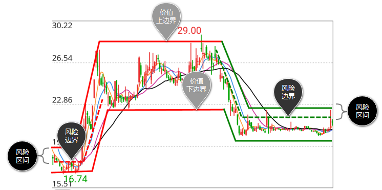
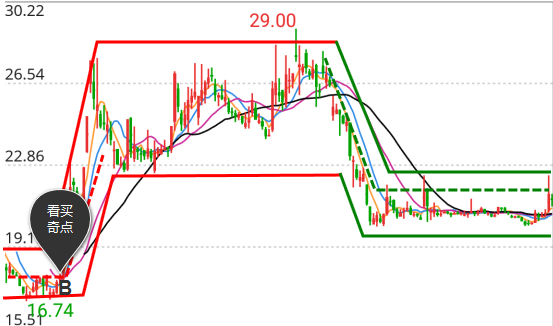
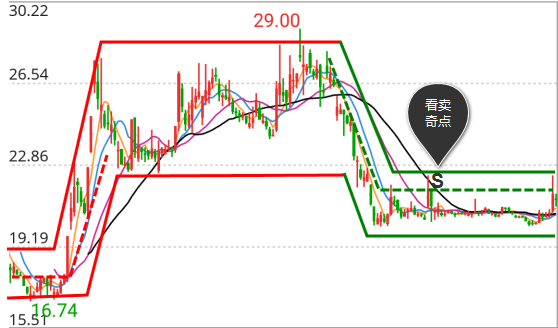

在图中两平行实线中上面一条为上边界，下面一条为下边界，实线中间区域为价值区间（详细解释见价值分析-价值区间）
在图中两平行实线中上面一条为上边界，下面一条为下边界，实线中间区域为价值区间（详细解释见价值分析-价值区间）
根据计算得出价值趋势维持上升或下降的临界值，我们称之为风险边界。在图中用虚线表示。风险区间分为两种：
在上升价值趋势中，风险区间由风险边界和价值区间的下边界构成。在图中用红色虚线和下边界围成。
在下降价值趋势中，风险区间由风险边界和价值区间的上边界构成。在图中用绿色虚线和上边界围成。

在价值趋势上升中，当价格回落到风险边界和下边界之间时，风险分析系统提示进入买入区间，发出B信号。B点出现表明价格下降到价值区间的下边界和风险边界之间，为买入时机，图中显示出B是决定买入的关键时机。

投资者应该在B点出现后的风险区间内买入，用B点出现时的下边界值作为止损价格，或者利用“能量分析”一起制定交易计划。B点与能量趋势上升、能量趋势由下降至调整搭配可靠性增加。
在价值趋势下降中，当价格回升到风险边界和上边界之间时，风险分析系统提示进入卖出区间，发出S信号。S点出现表明价格上升到价值区间的上边界和风险边界之间，为卖出时机，图中显示出S是决定卖出的关键时机。

投资者应该在S点出现后的风险区间内卖出，用S点出现时的上边界值作为回补价格，或者利用“能量分析”一起制定交易计划。S点与价值趋势下降、能量趋势下降、看跌奇点D搭配可靠性增加。